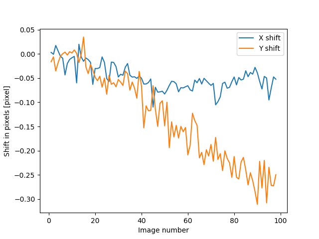
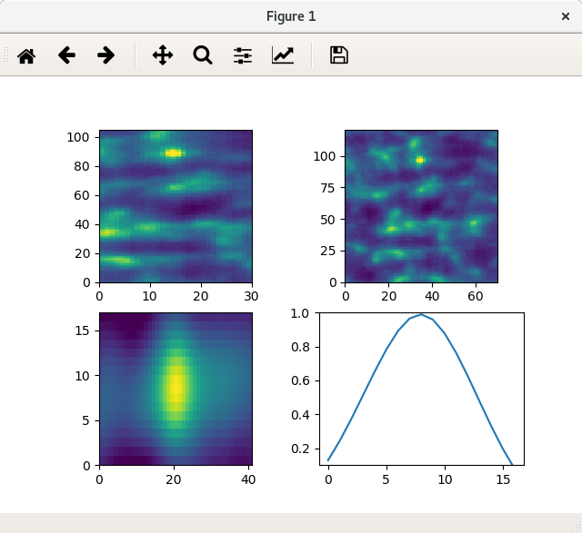

Getting started
Installation
1. From GitHub
This is the recommended way of getting this package. Since in this way, the users will have the example code and also the compiled documentation in the form of html files.
Git clone from the GitHub repository.
git clone https://github.com/wholingfei/spexwavepy.git
cd spexwavepy
pip install -e .
Or, if you have difficulties in using pip install due to various reasons,
make sure you have Numpy, Scipy, cv2(opencv-python) and natsort
available, you can use this package without installation as well.
2. From PyPI
pip install spexwavepy
This can install the package without the provided examples. The main page of this package at PyPI is https://pypi.org/project/spexwavepy/.
Getting raw data
We provide several examples to help users to learn how to use this python package. Every example shown in this documentation can be reproduced using our shared experiment data. To download the shared data, please visit https://zenodo.org/records/10892838.
Citing spexwavepy
If this package has helped your project, we would like you to cite it as:
Hu L, Wang H, Sawhney K. Spexwavepy: an open-source Python package for X-ray wavefront sensing using speckle-based techniques. J Synchrotron Radiat. 2024 Sep 1. doi: 10.1107/S1600577524005861.
Computational consumption
The two-dimensional (2D) speckle tracking can be time-consuming sometimes. We used the built-in multiprocessing module of Python to parallelise the code to speed up the data processing procedure.
We compared the running time of the single-core version and the multiprocessing version of
the XSS technique with reference beam. The two functions are
XSS_withrefer() and
XSS_withrefer_multi(), repectively.
The following table summerises the basic information of the computer used for this comparison.
Workstation |
Operating system |
Memory |
Number of CPUs |
|---|---|---|---|
Intel(R) Xeon(R) CPU E5-2670 v3 @ 2.30GHz |
Rocky Linux 8.7 |
125 G |
48 |
The comparison was extracted from the example code of
plane mirror measurement with reference beam.
Four Imagestack were loaded into the memory.
Each image stack consists of 101 images, each image in the stack is 1380 pixels
in width, 2140 pixels in height.
The single-core function XSS_withrefer() runned
for 2366 s, whereas the multi-core function
XSS_withrefer_multi() runned for 116 s using
32 out of total 48 CPUs.
Warning
Due to the different behaviours of the Python built-in multiprocessing module on Linux and Windows operating systems, the current version of spexwavepy can only run on Linux machine for the multiprocessing version of each technique. Future work will extend this package to run on multicores for the Windows system.
Tutorial
The spexwavepy is a data processing package for speckle-based X-ray wavefront sensing techniques. In this tutorial, we try to help new users to get familiar with the basic concept and the usage of this package. Let’s do it step by step.
1. Read the image stack
Note
Please find the example code from /spexwavepy/examples/tutorial/pixel_size.py
An image stack class Imagestack
is the first class you will create before any other operations.
We need to import it from imstackfun module.
from spexwavepy.imstackfun import Imagestack
As the name indicates, this class is a container of the raw data images. It should be created in the first place. Let’s create an instance of it.
Two mandatory parameters are needed to initialize an Imagestack. One is the data file folder, and the other one is the region of interest (ROI) in the raw images which will be cropped.
fileFolder = "/YOUR/DATA/FOLDER/PATH/pixelsizestep10um/402724-pcoedge-files/"
ROI = [0, 3500, 0, 4500] #[y_start, y_end, x_start, x_end]
Imstack_1 = Imagestack(fileFolder, ROI)
Note
Please change the above fileFoder to your own folder path
where you store the downloaded experiment data.
The above codes create an Imagestack instance Imstack_1.
The raw images are stored in the fileFolder.
The ROI in this case is larger than the real figure size,
thus, covers the whole image.
Other parameters, such as start image number, total image number, etc.,
can be used to define how to load the images in the Imagestack.
Until now, we have just defined one Imagestack instance,
no real data has been loaded.
To load the raw data into the memory, read_data()
method needs to be called.
Imstack_1.read_data()
After the above operation, the raw data will be stored in Imagestack.rawdata.
The rawdata is read-only.
Imagestack.data is used to store the data that to be processed in the future.
It is also possible that we only need to read one image from the folder at the beginning.
In this case, we can use the read_one() function from
the corefun module. If you want to crop the raw image,
you need to import crop_one() function too.
from spexwavepy.corefun import read_one, crop_one
To call read_one() function,
you need to input the file path that you want to read.
filepath = "/YOUR/DATA/FOLDER/PATH/pixelsizestep10um/402724-pcoedge-files/00005.tif"
im_raw = read_one(filepath, ShowImage=True)
Note
Please change the above filepath to your own folder path
where you store the downloaded experiment data.
If ShowImage is set to be True, then it will show the image.

Usually we need to crop the raw image for future processing, so we provide ROI for
crop_one() function.
The ROI should be defined as [y_start, y_end, x_start, x_end].
The above picture shows the region enclosed by the defiend rectangle.
filepath = "/YOUR/DATA/FOLDER/PATH/pixelsizestep10um/402724-pcoedge-files/00005.tif"
ROI = [750, 1500, 500, 2000] #[y_start, y_end, x_start, x_end]
im_crop = crop_one(im_raw, ROI, ShowImage=True)
Again, if ShowImage is set to be True, then it will show the cropped image.
{kind=link}
2. Determine the detector pixel size
Note
Please find the example code from /spexwavepy/examples/tutorial/pixel_size.py
In many cases, such as B16 Test beamline at Diamond Light Source, the pixel size of the detector used for data acquisition is changeable. In this case, the first step is to determine the pixel size.
Imstack_1 has already loaded the data used for detector pixel size determination,
we use the getpixsize() method to calculate the pixel size.
The parameters that needed are subROI, dim and step.
subROI is the ROI used for image matching.
dim is either ‘x’ or ‘y’, used to indicate in which direction the speckle generator was scanned.
step is the scan step in unit of \(\mu m\).
Note
Note that the image stack has been cropped according to ROI.
Thus, subROI is the region on the cropped images from the cropped image stack,
NOT the coordinates on the raw images.
subROI = [1500, 2000, 500, 2000] #[y_start, y_end, x_start, x_end]
dim = 'x'
step = 10.0 #[um]
pixsize = Imstack_1.getpixsize(subROI, dim, step, display=True)
The display is set to True, we show the fitting line and the fitting residual error.

The fitting results and the residuals.
Also, the calculated pixel size has been printed out.
Pixel size is 1.0237 um
Please refer to the detector pixel size determination in the user guide to find out how we use speckle patterns to determine the pixel size.
3. Stability check
Note
Please find the example code from /spexwavepy/examples/tutorial/stability.py
Using speckle patterns to monitor the stability of the beamline is a very simple use of the speckle-based technique. The images are acquired when all the hardware is fixed. The stability is monitored by comparing the images in the whole folder with the first one.
To enable the stability check,
a class called Tracking needs to be initialized.
We import it from the trackfun module.
from spexwavepy.trackfun import Tracking
Depending on the type of the speckle-based technique that is used,
one image stack or two image stacks or even more image stacks are needed
to initialize the Tracking class.
For stability checking, only one image stack is needed.
As shown in the above section, we need to create a Imagestack
class to contain the raw images.
from spexwavepy.imstackfun import Imagestack
fileFolder = "/YOUR/DATA/FOLDER/PATH/stabilitycheck/"
ROI = [0, 3500, 0, 4500] #[y_start, y_end, x_start, x_end]
Imstack_1 = Imagestack(fileFolder, ROI)
Imstack_1.fnum = 99 #File number to be used for stability check
Imstack_1.fstart = 0 #File start number to be used for stability check
Imstack_1.dim = 'both'
track = Tracking(Imstack_1)
The Imagestack class Imstack_1 is the
input of the Tracking class.
Usually, there will be plenty of raw images in one folder.
There is no need to load all the data into memory for stability checking.
The stability() method is used for it.
edge_x and edge_y are the two parameters needed.
edge_x and edge_y can be either a single integer or a list/tuple of two integers,
like [int1, int2]. If input as a single integer int0,
edge_x and edge_y will be expanded as a list of two integers,
the elements in the list are the same, i.e., [int0, int0].
edge_x, edge_y = 10, 10
delayX, delayY, res = track.stability(edge_x, edge_y)
The following figure shows the result. We can see that there is a linear drifting in the y direction.
{kind=link}
We can also use multi-cores to accelerate the calculation. In this python package, we have implemented multiprocessing form for many tracking method. These method usually end with the suffix “multi”.
cpu_no = 16
edge_x, edge_y = 10, 10
delayX, delayY, res = track.stability_multi(edge_x, edge_y, cpu_no)
Warning
Please check the available CPUs before calling stability_multi() method.
The stability_multi() method uses the
built-in multiprocessing package.
Please refer to stability check using speckle patterns in the user guide to see how to do the stability checking using speckle patterns.
4. Single CRL measurement
Note
Please find the example code from /spexwavepy/examples/tutorial/single_CRL.py
In this section we will show how to obtain a single CRL wavefront using X-ray Speckle Scanning (XSS) technique, for the principle of this technique, please refer to X-ray Speckle Scanning (XSS) technique with reference beam. As to the detailed description of the implementation of this technique, please go to User guide.
First, let us load and see the raw images.
from spexwavepy.imstackfun import Imagestack
from spexwavepy.trackfun import Tracking
from spexwavepy.corefun import read_one, crop_one
ref_folder_x = "/YOUR/DATA/FOLDER/PATH/CRLReferX1D/402923-pcoedge-files/"
sam_folder_x = "/YOUR/DATA/FOLDER/PATH/CRLSampleX1D/402924-pcoedge-files/"
ref_folder_y = "/YOUR/DATA/FOLDER/PATH/CRLReferY1D/402925-pcoedge-files/"
sam_folder_y = "/YOUR/DATA/FOLDER/PATH/CRLSampleY1D/402926-pcoedge-files/"
im_sam_tmp = read_one(sam_folder_y+'00005.tif', ShowImage=True)
{kind=link}
The raw image of the single CRL shows that we only need to crop the central part of it for future processing. The reference image should use the same ROI as the CRL image.
ROI_sam = [530, 1580, 750, 1800]
ROI_ref = ROI_sam
im_crop_tmp = crop_one(im_sam_tmp, ROI_sam, ShowImage=True)
im_ref_tmp = read_one(ref_folder_y+'00005.tif', ShowImage=True)
im_crop_tmp2 = crop_one(im_ref_tmp, ROI_sam, ShowImage=True)
{kind=link}
Imstack_sam_x = Imagestack(sam_folder_x, ROI_sam)
Imstack_ref_x = Imagestack(ref_folder_x, ROI_ref)
Imstack_sam_y = Imagestack(sam_folder_y, ROI_sam)
Imstack_ref_y = Imagestack(ref_folder_y, ROI_ref)
Imstack_sam_x.normalize = True
Imstack_ref_x.normalize = True
Imstack_sam_y.normalize = True
Imstack_ref_y.normalize = True
Since we are going to use XSS technique with reference beam,
we need at least two image stacks to initialize the Tracking class,
as concluded in this table in user guide.
The first image stack to be loaded is the template image stack, i.e., the image stack with test optic.
The second image stack is the reference image stack.
In this example, we would like to obtain the 2D slope map in two directions from two
1D scans. Thus we need four image stacks. Two for references and two for samples, respectively.
The first two image stacks are the template image stack and reference image stack
in the x (horizontal) scan direction. The last two image stacks are those in the
y (vertical) direction. Also, we choose to normalize these image stacks
in the beginning, so we set the normalize attribute of the
Imagestack class to be True.
track_XSS = Tracking(Imstack_sam_x, Imstack_ref_x, Imstack_sam_y, Imstack_ref_y)
Before we do the real tracking, there are some parameters to be set for
the Tracking class of track_XSS.
The parameter of dimension is set to be ‘1D’ or ‘2D’.
We use it to tell the code to do 1D or 2D data processing. scandim is used to tell
the code the scan direction of the loaded image stack. For XSS technique, it supports
‘x’, ‘y’ and ‘xy’. In this case, we use ‘xy’. That means we will obtain the
speckle shifts from both x (horizontal) 1D scan and y (vertical) 1D scan all together.
Thus, 4 image stacks are loaded. Besides, we need to provide
dist, pixsize and scanstep.
They are distance between diffuser and detector planer in mm,
detector pixel size in \(\mu m\) and
scan step size in \(\mu m\), repectively.
track_XSS.dimension = '2D'
track_XSS.scandim = 'xy'
track_XSS.dist = 623. #[mm]
track_XSS.pixsize = 1.03 #[um]
track_XSS.scanstep = 1.0 #[um]
The XSS_withrefer() method of
Tracking class is used for the
XSS technique with reference beam.
There are several compulsory input for
XSS_withrefer() method before we call it.
edge_x, edge_y and edge_z define the edges of the raw images in the image stack to be
cut in order to be trackable. width is the window width used for 1D tracking,
pad_xy determines how large the extra area needed for the reference image.
See User guide for detailed description.
edge_x = 20
edge_y = 20
edge_z = 8
width = 30
pad_xy = 20
Then we call XSS_withrefer() function.
In the beginning, we can set the display to be True to have a check
on the settings of all the parameters.
track_XSS.XSS_withrefer(edge_x, edge_y, edge_z, width, pad_xy, display=True)
Note
Double click the mouse will terminate the display.
If every parameter is set appropriately, the following window will appear. The top-left is the template image, the top-right is the reference image, the bottom-left is the tracking coefficient matrix, the bottom-right is the central cut of the matrix.
{kind=link}
Switch off display if we want to do the real calculation.
track_XSS.XSS_withrefer(edge_x, edge_y, edge_z, width, pad_xy, display=False)
If you have multicores, you can also use the multi-core version of this function,
XSS_withrefer_multi(). The only additional
parameter is cpu_no.
track_XSS.XSS_withrefer_multi(edge_x, edge_y, edge_z, width, pad_xy, cpu_no=16)
Warning
Please check the available CPUs before calling
XSS_withrefer_multi() method.
After calling the XSS_withrefer() or
XSS_withrefer_multi() function,
the 2D shift map in both x and y direction are stored in the delayX and
delayY attribute of the Tracking class.
Likewise, the 2D slope map are stored in the
sloX and sloY attribute of the same class.
plt.imshow(track_XSS.delayX, cmap='jet')
plt.xlabel('x [pixel]')
plt.ylabel('y [pixel]')
plt.colorbar()
plt.title('Shift in x direction')
plt.figure()
plt.imshow(track_XSS.delayY, cmap='jet')
plt.xlabel('x [pixel]')
plt.ylabel('y [pixel]')
plt.colorbar()
plt.title('Shift in y direction')
plt.figure()
plt.imshow(track_XSS.sloX, cmap='jet')
plt.xlabel('x [pixel]')
plt.ylabel('y [pixel]')
plt.colorbar(label=r'$\mu$rad')
plt.title('Slope in x direction')
plt.figure()
plt.imshow(track_XSS.sloY, cmap='jet')
plt.xlabel('x [pixel]')
plt.ylabel('y [pixel]')
plt.colorbar(label=r'$\mu$rad')
plt.title('Slope in y direction')
{kind=link}
We know that the tested single CRL has a surface of paraboloid of revolution. Thus, its 2D slope map will be a tilted plane. Let’s calculate the slope of this plane. We extract the central horizontal line from the slope map in horizontal direction.
plt.figure()
plt.plot(track_XSS.sloX[500, :], label='Raw data')
The curve of slope in the central part can be fitted with a straight line, if we cut the edge of this curve.
sloX_cen = track_XSS.sloX[500, :]
sloX_cen_fit = sloX_cen[200:800]
sloX_coord = np.arange(200, 800, 1)
fit_para_X = np.polyfit(sloX_coord, sloX_cen_fit, deg=1)
We plot the fitted line and the raw curve together.
plt.plot(np.arange(200, 800, 1), track_XSS.sloX[500, 200:800], label='Partial data')
x_plot = np.arange(1, len(track_XSS.sloX[500, :])+1, 1)
plt.plot(x_plot, fit_para_X[0]*x_plot+fit_para_X[1], label='Fitted line')
plt.legend()
plt.xlabel('Pixel')
plt.ylabel('Slope ['+'$\mu rad$'+']')
plt.title('X slope')
{kind=link}
Likewise, we do the same on y direction.
sloY_cen = track_XSS.sloY[:, 450]
sloY_cen_fit = sloY_cen[200:780]
sloY_coord = np.arange(200, 780, 1)
fit_para_Y = np.polyfit(sloY_coord, sloY_cen_fit, deg=1)
plt.figure()
plt.plot(track_XSS.sloY[:, 450], label='Raw data')
plt.plot(np.arange(200, 780, 1), track_XSS.sloY[200:780, 450], label='Partial data')
y_plot = np.arange(1, len(track_XSS.sloY[:, 450])+1, 1)
plt.plot(y_plot, fit_para_Y[0]*y_plot+fit_para_Y[1], label='Fitted line')
plt.legend()
plt.xlabel('Pixel')
plt.ylabel('Slope ['+'$\mu rad$'+']')
plt.title('Y slope')
{kind=link}
Let’s check the fitting parameter in both directions.
print("Fiiting parameters in x direction:", fit_para_X)
print("Fiiting parameters in y direction:", fit_para_Y)
Fiiting parameters in x direction: [ 0.01472175 -6.86434882]
Fiiting parameters in x direction: [ 0.01473827 -7.18284839]
We can see the slope of the two fitted straight lines are very close. The slope for the ideal single 2D CRL in both directions is a tilted plane. We use the fitting parameters to generated this plane.
y_dim_tmp, _ = track_XSS.sloX.shape
planeXcoord = np.arange(1, len(sloX_cen)+1, 1)
planeX = planeXcoord * fit_para_X[0] + fit_para_X[1]
planeX = np.array([list(planeX)] * y_dim_tmp)
_, x_dim_tmp = track_XSS.sloY.shape
planeYcoord = np.arange(1, len(sloY_cen)+1, 1)
planeY = planeYcoord * fit_para_Y[0] + fit_para_Y[1]
planeY = np.rot90(np.array([list(planeY)] * x_dim_tmp), k=-1)
To estimate the slope error, we subtract the fitted plane.
sloErr_x = track_XSS.sloX - planeX
sloErr_y = track_XSS.sloY - planeY
After that, we plot the 2D map of the slope error.
plt.figure()
y_dim_tmp, x_dim_tmp = track_XSS.sloX.shape
plt.imshow(sloErr_x, cmap='jet', vmin=-0.5, vmax=0.5, extent=[0, x_dim_tmp*track_XSS.pixsize, y_dim_tmp*track_XSS.pixsize, 0])
plt.colorbar(label=r'$\mu rad$')
plt.xlabel(r'$\mu m$')
plt.ylabel(r'$\mu m$')
plt.title('Slope error in X direction')
plt.figure()
y_dim_tmp, x_dim_tmp = track_XSS.sloY.shape
plt.imshow(sloErr_y, cmap='jet', vmin=-0.5, vmax=0.5, extent=[0, x_dim_tmp*track_XSS.pixsize, y_dim_tmp*track_XSS.pixsize, 0])
plt.colorbar(label=r'$\mu rad$')
plt.xlabel(r'$\mu m$')
plt.ylabel(r'$\mu m$')
plt.title('Slope error in Y direction')
{kind=link}
Next, we can do 2D integration to obtain the surface of the wavefront.
We invoke Integration2D_SCS() function
from postfun module to do it.
from spexwavepy.postfun import Integration2D_SCS
surface = Integration2D_SCS(track_XSS.sloX, track_XSS.sloY)
For the 2D integration, please see the User guide for details. The x and y coordinate in the 2D integrations are in the unit of \(\mu m\). The output height is in the unit of pm. Let’s see the integrated surface.
plt.figure()
plt.imshow(surface, cmap='jet')
{kind=link}
The surface should be cutted in order to be fitted.
surface2fit = surface[200:750, 150:750]
plt.figure()
plt.imshow(surface2fit, cmap='jet')
{kind=link}
The ideal wavefront after a single CRL is defined as:
We fit the measured wavefront to the above ideal function.
def ideal_surf(data, x0, y0, R, z0):
x = data[0]
y = data[1]
return ((x-x0)**2 + (y-y0)**2) / R + z0
x_surf = np.arange(150, 750)
y_surf = np.arange(200, 750)
X_surf, Y_surf = np.meshgrid(x_surf, y_surf)
X = np.ravel(X_surf)
Y = np.ravel(Y_surf)
XY_data = [X, Y]
Z_data = np.ravel(surface2fit)
p_init = [(150+750)//2, (200+750)//2, 10, np.mean(Z_data)]
popt, pcov = scipy.optimize.curve_fit(ideal_surf, XY_data, Z_data, p_init)
Since the real pixel size is 1.03 \(\mu m\) rather than the assumed 1 \(\mu m\),
the real f should be 70.16 m.
print("f is {:.4f} m.".format(popt[2]/2*track_XSS.pixsize))
f is 70.1574 m.
The beam energy is 15.5 keV, the CRL is made of Be, the \(\delta\) for Be at 15.5 keV is around \(1.42\times 10^{-6}\). According to the relation
The R will be 199.25 \(\mu m\). It is close to 200 \(\mu m\)
which is the value the manufacturer provided.
delta=1.42 * 1.e-6
print("R is {:.2f} um.".format(popt[2]*track_XSS.pixsize*delta*1.e6))
R is 199.25 um.
From the parameters popt we can obtain the fitted surface.
y_dim_tmp, x_dim_tmp = surface.shape
x_plot = np.arange(0, x_dim_tmp)
y_plot = np.arange(0, y_dim_tmp)
X_plot, Y_plot = np.meshgrid(x_plot, y_plot)
surf_fit = (((X_plot-popt[0])**2+(Y_plot-popt[1])**2)/popt[2]+popt[3])
The residual is surface-surf_fit. Remember that the real pixel size is 1.03 \(\mu m\) instead of 1 \(\mu m\), this factor should be multiplied. Also, we cut the outside part of the CRL using a mask.
residual = surface - surf_fit
mask = 1 - (np.abs(residual)>20)*np.ones(residual.shape)
residual = residual * mask * track_XSS.pixsize #[pm]
Divide the residual with \(\delta\), we have the residual height error of single CRL. Also we can convert the wavefront surface to the CRL thinckness distribution.
delta = 1.42 * 1.e-6
T_residual = residual / (delta * 1.e6) #[um]
T_crl = surface * track_XSS.pixsize / (delta * 1.e6) * 1.e-3 #[mm]
We display the 2D residual height error map.
plt.figure()
y_dim_tmp, x_dim_tmp = T_residual.shape
plt.imshow(T_residual, cmap='jet', extent=[0, x_dim_tmp*track_XSS.pixsize, y_dim_tmp*track_XSS.pixsize, 0])
plt.colorbar(label=r'$\mu m$')
plt.xlabel(r'$\mu m$')
plt.ylabel(r'$\mu m$')
plt.title('Residual thickness error')
{kind=link}
Likewise, we can also draw the 3D CRL height surface shape.
from mpl_toolkits import mplot3d
plt.figure()
y_dim_tmp, x_dim_tmp = T_crl.shape
ax = plt.axes(projection='3d')
ax.plot_surface(X_plot*track_XSS.pixsize, Y_plot*track_XSS.pixsize, (T_crl-np.min(T_crl)), rstride=1, cstride=1, cmap='jet', edgecolor='none')
ax.set_title('Be single CRL')
ax.set_xlabel(r'$\mu$m')
ax.set_ylabel(r'$\mu$m')
ax.set_zlabel(r'mm')
{kind=link}